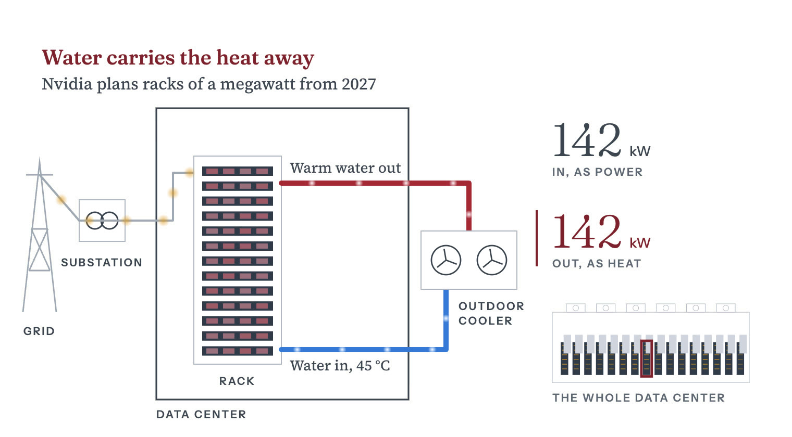
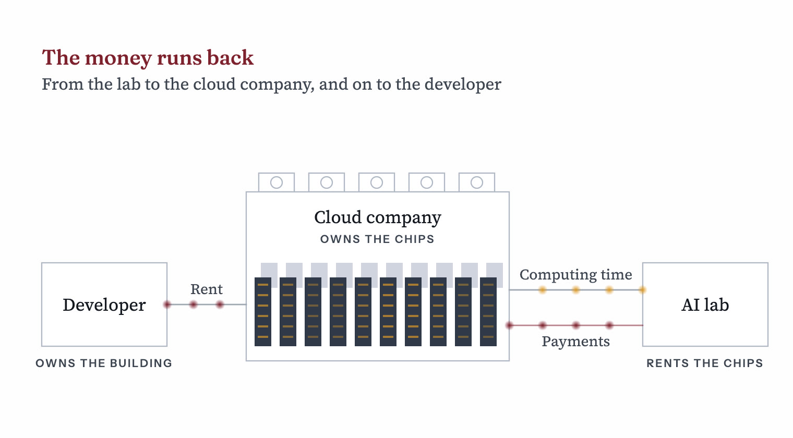

Stage 14 of 14Moderately hard to substitute
Chapter 14: Data Centers and Power
Amazon, Google, Meta, Microsoft and Oracle owned an estimated 71 percent of the world’s AI computing power at the end of 2025. New sites wait years for power.
Sharma, Yashvardhan. “Data Centers and Power.” Chip Supply Chain: How AI Chips Are Made. Updated 23 November 2026. https://chipsupplychain.org/data-centers-and-power/
A liquid-cooled rack of 72 GPUs, Nvidia’s GB200 NVL72, drawn to scale from Supermicro’s February 2025 datasheet: 2,236 mm tall and 600 mm wide. Eight 33 kW power shelves feed the trays through a copper busbar at the back.
In plain terms
A data center is a building full of computers, and an AI data center holds of AI . Five companies own most of the world’s AI computing power, and four of them rent part of it to other firms1. One rack, a cabinet taller than a door, can draw 142 2. Every watt of it comes back out as heat, and liquid piped through the rack carries the heat away2. The newest sites are planned in gigawatts3. One gigawatt is the whole output of a large power station. Getting that much electricity to a site is harder than putting up the building.
In short
The research group Epoch AI judges that , smaller and newer cloud companies that generally focus on AI, are probably the most important owners of AI after the 4. Cloud companies also rent from one another, and Microsoft supplied about 67 percent of the revenue of the cloud company CoreWeave in 20255. Oracle booked more than $30 billion of new AI cloud contracts in the three months to August 2026, which raised the revenue under contract that it had yet to earn to $664 billion6.
ERCOT, the grid operator for most of Texas, was tracking about 474 of demand from big power users seeking a grid connection in June 2026, roughly 90 percent of it from data centers7. In September 2026 ERCOT said it had paused approvals to energize data centers of 75 MW or more until a state audit and a review of their impact on local communities are complete8. The gas turbine maker GE Vernova had a gas equipment backlog and reserved factory slots of 116 GW in mid-2026, against planned output of 20 GW a year from the third quarter9.
OpenAI and Anthropic, two leading AI labs, rented almost all of the computing power they used, the research group Epoch AI found in April 20261. OpenAI’s came mainly from Microsoft, Oracle and CoreWeave, and Anthropic’s mainly from Amazon and Google4.
- Who leads
- USGoogle 24.8 percent of the world’s AI computing power at the end of 2025, Epoch AI estimates12
- USMicrosoft 16.8 percent of the world’s AI computing power at the end of 2025, Epoch AI estimates12
- USAmazon 12.1 percent of the world’s AI computing power at the end of 2025, Epoch AI estimates12
- USMeta 11.3 percent of the world’s AI computing power at the end of 2025, Epoch AI estimates12
- USOracle 5.6 percent of the world’s AI computing power at the end of 2025, Epoch AI estimates12
- USCoreWeave $132.5 billion of revenue backlog, contracted revenue still to come, at the end of September 202613
- Where it is made
- USUnited States The five hyperscalers and CoreWeave, and GE Vernova turbines and grid equipment
- CHSwitzerland Hitachi Energy transformers and switchgear, and ABB switchgear
- DEGermany Siemens Energy grid technologies and turbines
- JPJapan Mitsubishi Power equipment, including gas turbines
- Why substitution is possible
- Buyers of grid equipment can choose among suppliers, and GE Vernova’s 2025 annual report names Hitachi Energy, Siemens Energy, Schneider Electric and ABB among its key competitors14. But in the United States in 2024 the longest reached 60 months15. An International Energy Agency survey published in 2025 found waits of up to four years worldwide16.
Chinese companies together owned just over 5 percent of the world’s AI computing power at the end of 2025, by Epoch AI’s estimate, which leaves out smuggled past US 1. China used 25 percent of the world’s data center electricity in 2024, second to the United States, by the International Energy Agency’s estimate17.
How AI data centers are powered and cooled
Power in, heat out

- The site. Data centers are where AI chips go to work. A large training site holds a hundred thousand of them, in rows of racks.
- Power in. Power comes in from the grid, stepped down by a substation, and runs through the data center to every rack. One rack of AI chips can draw 142 kilowatts.
- Heat. Every watt of it comes back out as heat, more than air can carry away.
- Water out. So water runs through plates on the chips, carries the heat to coolers outdoors and comes back. Nvidia plans for racks of a megawatt each from 2027, so the power coming in and the heat going out keep growing.
The is the basic unit of AI compute. Nvidia’s rack draws up to 142 through eight 33 kW , the rack’s own power supplies2. Supermicro’s datasheet of February 2025 gives the GB200 NVL72, the rack before it, as 2,236 mm tall and 600 mm wide19. Large sites hold many such racks. Colossus 1, an AI data center in Memphis, Tennessee, held an estimated 230,000 Nvidia by July 202520.
Power reaches the rack through a chain of heavy equipment, and each piece has its own , the wait between order and delivery. Between the grid and the rack, a steps the high voltage down with transformers. Switchgear, the building’s heavy circuit breakers, can cut any part of the site off in a fault. Battery-backed supplies keep the racks running for the seconds it takes backup generators to start. Distribution boards split the feed among the rows of racks.
At the back of each rack, a carries the current down to the server trays. It is a solid copper bar, because an ordinary cable would overheat at that current.
Heat leaves in water. , metal blocks with coolant running through them, sit on the GPU packages and pass the heat to the building’s water loop, which releases it outdoors21. Nvidia’s Rubin racks run coolant at up to 45 °C, warm enough that in many climates the loop can release its heat without turning on chillers, the refrigeration machines that cool water21.
Nvidia is also moving the power that feeds its racks to 800 volts of direct current. Raising the voltage cuts the current needed for the same power, and the heat in copper comes from current. Inside racks such as the GB300 NVL72, power runs at 54 volts, and at that voltage a one-megawatt rack would need up to 200 kg of copper busbar22.
Who owns the chips and who rents them
One firm can build a data center, a second can own the inside it, and a third can use the chips’ computing time. Abilene, Texas, is the flagship site of OpenAI’s Stargate data center program3. The developer Crusoe designed and built the campus23. Oracle owns the AI chips there, and OpenAI uses them, Epoch AI found24.
Who owns what in an AI data center

- The building. A developer builds the data center and owns the building.
- The chips. A cloud company leases the building and fills it with racks of AI chips that it owns.
- The renter. An AI lab rents the computing time of those chips, on a contract that usually runs one to six years.
- The money. The lab pays for all the time it booked, used or not. The cloud company pays the developer rent.
The largest owners of AI chips are the , the companies that run data centers on the largest scale1. Amazon, Google, Meta, Microsoft and Oracle held 71 percent of the world’s AI computing power at the end of 2025, Epoch AI estimates12. The estimate adds up the rated speed of the AI chips each firm had bought in recent years12. Google held the most, 24.8 percent12.
All the hyperscalers except Meta are cloud companies, which rent part of their computing power to other firms1. Meta has no cloud business and uses its chips for its own AI models and for the systems that choose the posts and ads its apps show4.
Oracle rents out its AI chips through its cloud, and in September 2026 it said it had delivered more than 300,000 GPUs to its AI cloud customers since the end of May6. In July 2025 OpenAI agreed with Oracle to develop up to 4.5 GW of further Stargate capacity, a partnership OpenAI said would exceed $300 billion over five years3. Oracle’s remaining performance obligations, revenue under contract that it has yet to earn, reached $664 billion at the end of August 20266. Oracle said most of the rise in those obligations in the six months to May 2026 came from large AI contracts in which the customer prepaid for the chips or bought and supplied them itself25. Those terms reduce the capital Oracle must raise to build its AI data centers, the company said25.
Epoch AI judges that , smaller and newer cloud companies that generally focus on AI, are probably the most important owners of AI chips after the hyperscalers4. SemiAnalysis, a research firm, tracked 209 cloud companies renting out AI chips in November 2025 and counted CoreWeave among the neoclouds26. CoreWeave ran 52 data centers with more than 1.7 GW of active power at the end of September 202613.
CoreWeave’s 2025 annual report says it leases all of its data centers27. It pays for its buildout mostly with debt backed by customer contracts28. Those contracts usually run one to six years, and customers pay for all the capacity even if they use less, often paying part in advance29.
Two hyperscalers, Microsoft and Meta, rent from neoclouds too. Microsoft supplied about 67 percent of CoreWeave’s revenue in 20255. Microsoft buys some computing power from neoclouds and rents it out again to its own customers, Epoch AI found4. Nebius, a neocloud headquartered in Amsterdam, agreed in March 2026 to supply Meta with capacity worth up to about $27 billion over five years30.
AI labs sign large contracts for computing power. In October 2025 OpenAI contracted to buy a further $250 billion of Azure cloud services from Microsoft31. Its Stargate program with Oracle and the investment company SoftBank had more than 8 GW of planned capacity in the United States by October 2025, OpenAI said32. Epoch AI projects that the program’s seven US sites will exceed 9 GW by 202933.
SpaceX bought xAI in February 202634. Until then, xAI was the only major stand-alone AI lab that owned most of the computing power it used, Epoch AI found4. In May 2026 Anthropic agreed to use all of the computing capacity of SpaceX’s Colossus 1 data center35.
Firms outside the United States are building too. In May 2025 Abu Dhabi’s media office said that G42, an Emirati AI company, would build a 1 GW cluster there called Stargate UAE, which OpenAI and Oracle would operate36. Alibaba said in February 2025 that it would invest at least RMB 380 billion ($53 billion) in cloud computing and AI infrastructure over three years37. Chinese companies together owned just over 5 percent of the world’s AI computing power at the end of 2025, by Epoch AI’s estimate, which leaves out chips smuggled past US 1.
The hyperscalers’ grew an average of 72 percent a year from the second quarter of 2023 to the end of 2025, driven by investment in AI infrastructure, Epoch AI found38. The five firms’ spending came to $140,648 million in the fourth quarter of 2025, by Epoch AI’s count38.
Amazon spent the most of the five hyperscalers, $40,465 million in the fourth quarter of 2025
Capital spending by the five US hyperscalers, fourth quarter of 2025
| Amazon | $40,465M |
|---|---|
| Microsoft | $36,206M |
| Alphabet | $28,468M |
| Meta | $22,463M |
| Oracle | $13,046M |
Sharma, Yashvardhan. “Figure 14.3: Capital spending by the five US hyperscalers, fourth quarter of 2025.” Chip Supply Chain: How AI Chips Are Made. Updated 23 November 2026. https://chipsupplychain.org/data-centers-and-power/#fig-data-centers-and-power-hyperscaler-capex. Data: Epoch AI, hyperscaler capex trend, February 2026, table of capital spending by quarter, fourth quarter of 2025.
Cooling and power options
Cooling
- Air. Heat exchangers in the rack door work when density, the power each rack draws, is moderate, but Nvidia’s GB300 NVL72 rack is liquid cooled2.
- Direct-to-chip liquid. Nvidia’s Rubin platform is 100 percent liquid cooled, and Nvidia says every cloud provider and data center operator building for it is moving to liquid21.
- Immersion. The servers sit in a bath of fluid, which makes them hard to service.
Motivair, Schneider Electric’s cooling division, follows Nvidia’s product roadmap and has worked with Nvidia for nearly a decade21.
Rack power
Nvidia’s 800-volt DC architecture is designed for racks from 100 kW to more than a megawatt, with megawatt racks from 202722. Nvidia is making the change because the 54-volt distribution in existing racks begins to hit physical limits once racks exceed 200 kW22.
Nvidia names nine data center power system providers for its 800-volt designs for gigawatt-scale data centers, among them ABB, Eaton, Hitachi Energy, Mitsubishi Electric, Schneider Electric, Siemens and Vertiv10.
A megawatt rack changes the busbar, the floor loading, the coolant flow, the leak detection and the energy stored in the rack. Nvidia’s Vera Rubin NVL72 rack design adds energy storage to keep power steady10.
Where the electrons come from
- Grid interconnection. The slow path in the United States, where the queues to connect are long33.
- Behind-the-meter gas, generation on the site itself. The fast path, which at least three of OpenAI’s seven US Stargate sites will use to avoid grid queues33.
- Nuclear. Existing plants already sell power to data centers39. Talen Energy supplies Amazon’s data center campus next to the Susquehanna nuclear plant in Pennsylvania under a June 2025 contract expected to reach 1,920 MW no later than 203239. Constellation signed a power purchase agreement with Microsoft to restart Three Mile Island Unit 1 as the 835 MW Crane Clean Energy Center40. In August 2026 Constellation said it expects to restart the plant in 202741.
Data center electricity demand forecasts
US data center electricity use is projected to rise steeply by 2030. US data centers used 192 in 2024, 4.7 percent of national electricity, according to a June 2026 estimate by Lawrence Berkeley National Laboratory that leaves out cryptocurrency mining42. The lab’s reference case, its main scenario, projects 464 TWh in 2028 and 649 TWh in 2030, which would be 11.8 percent of forecast US electricity use42. Its scenarios for 2030 range from 521 to 843 TWh, or 9.5 percent to 15.3 percent43.
The US Energy Information Administration expects electricity demand to keep rising, but its September 2026 outlook cut the 2027 electricity sales forecast for the region that includes Texas by 4.7 percent from August44.
US data centers’ projected 2030 use ranges from 521 to 843 TWh
US data center electricity use, 2024 and 2030 projection range
| 2024 | 192 TWh |
|---|---|
| 2030 low case | 521 TWh |
| 2030 reference case | 649 TWh |
| 2030 high case | 843 TWh |
Sharma, Yashvardhan. “Figure 14.4: US data center electricity use, 2024 and 2030 projection range.” Chip Supply Chain: How AI Chips Are Made. Updated 23 November 2026. https://chipsupplychain.org/data-centers-and-power/#fig-data-centers-and-power-us-dc-electricity. Data: Lawrence Berkeley National Laboratory, June 2026.
By the International Energy Agency’s estimate, China accounted for 25 percent of the world’s data center electricity use in 2024, second to the United States at 45 percent17. Data centers made up around 3 percent of the growth in China’s electricity demand from 2022 to 2024, the agency found45.
The International Energy Agency expected worldwide investment in data centers to reach $580 billion in 202511. SemiAnalysis forecast in October 2026 that 50 GW of data center capacity would be added in 202746. It said that was about as much as the world’s data center market had built in total through 202446. Just 40 campuses in an advanced stage of construction held more than 24 GW, most of it to be delivered in 2027, it found46.
Long waits for grid power and equipment
Electricity grids are under strain in many places. In April 2025 the International Energy Agency estimated that around 20 percent of planned data center projects could be at risk of delay unless that strain is addressed17. The agency also found that a new transmission line can take four to eight years to build in advanced economies17.
On the Texas grid, big power users have asked for far more electricity than is connected and running. ERCOT, the grid operator for most of Texas, was tracking about 474 GW of large loads seeking a connection in June 2026, roughly 90 percent of it data centers7. In its operational overview for September 2026, ERCOT counted 9,456 MW of large loads approved to energize, that is, cleared to switch on47. Judging by peak monthly use in September, it believed only 4,132 MW of it was operating47.
Texas has paused new connections for large data centers while it audits them. On 3 August 2026 Texas Governor Greg Abbott ordered the state’s Public Utility Commission and ERCOT to audit every data center waiting to connect to the grid before any data center project moves forward48. ERCOT then paused approvals to energize data centers and crypto mining sites of 75 MW or more until the audit and a review of their impact on local communities are complete8.
Data center projects also wait on power equipment from makers such as GE Vernova. GE Vernova builds large gas turbines, and its 2025 annual report names Siemens Energy and Mitsubishi Power among the key competitors of its power generation business14. Its electrification business makes power transformers and switchgear, and the report names Hitachi Energy, Siemens Energy, Schneider Electric and ABB among that business’s key competitors14.
- Large power transformers. In the United States in 2024, lead times of 36 months were commonly quoted and the longest reached 60 months15. Before the pandemic, a large transformer could be ordered with a lead time of under a year49. In an industry survey published in 2025, the International Energy Agency found that large power transformers took up to four years to secure worldwide16. It also found that their average lead times had almost doubled since 202116. By a US Commerce Department estimate, 82 percent of the units put into US service in 2019 were imported50. A transformer’s size is given as a power rating in megavolt-amperes (MVA), a measure of how much power it can handle15. Measured by capacity, US factories supplied 29.2 percent of the transformers rated 60 MVA and above bought in the US in 2023, and imports supplied the rest18.
- Gas turbines. GE Vernova’s gas equipment backlog and reserved factory slots grew from 100 GW to 116 GW in the second quarter of 20269. In July 2026 it expected yearly gas turbine output of 20 GW in the third quarter of 2026 and 24 GW in 2028, and it was taking steps to reach 30 GW in 20309.
- Grid equipment for data centers. In the first half of 2026, data center orders for GE Vernova’s electrification business passed $5 billion, more than double that business’s data center orders for all of 20259.
GE Vernova is taking steps to reach 30 GW of annual gas turbine output in 2030
GE Vernova’s planned annual gas turbine output
| Q3 2026 | 20 GW/yr |
|---|---|
| 2028 | 24 GW/yr |
| 2030 | 30 GW/yr |
Sharma, Yashvardhan. “Figure 14.5: GE Vernova’s planned annual gas turbine output.” Chip Supply Chain: How AI Chips Are Made. Updated 23 November 2026. https://chipsupplychain.org/data-centers-and-power/#fig-data-centers-and-power-turbine-output. Data: GE Vernova second-quarter 2026 results, July 2026.
Memory chips are also in short supply. Micron’s quarterly report for the period ended 28 May 2026 says AI-driven growth in demand for memory and storage is outpacing industry supply51.
Flashcards
Recall each answer, then turn the card.
Which five companies own most of the world’s AI computing power?
Amazon, Google, Meta, Microsoft and Oracle. Epoch AI estimates that they held 71 percent of it at the end of 2025.
Where do AI labs such as OpenAI and Anthropic get their computing power?
Epoch AI found in April 2026 that they rented almost all of it from cloud companies. OpenAI rented mainly from Microsoft, Oracle and CoreWeave, and Anthropic mainly from Amazon and Google.
What is a neocloud?
A smaller, newer cloud company that generally focuses on AI, such as CoreWeave or Nebius. It rents out the computing time of its AI chips.
Why are AI racks cooled with liquid?
One Nvidia GB300 NVL72 rack can draw up to 142 kilowatts, and every watt comes back out as heat.
What slows down building an AI data center?
Power. In advanced economies a new transmission line can take four to eight years to build, and in 2024 a large power transformer commonly took three years to arrive in the United States.
Four things to remember
- Amazon, Google, Meta, Microsoft and Oracle owned an estimated 71 percent of the world’s AI computing power at the end of 2025.
- OpenAI and Anthropic rented almost all of the computing power they used from cloud companies, Epoch AI found in April 2026.
- Power equipment is one of the slow parts of building a data center. In 2024 lead times of 36 months were commonly quoted for a large transformer.
- The United States used 45 percent of the world’s data center electricity in 2024 and China 25 percent, by the International Energy Agency’s estimate.
Sources (51)
Source tiers A company filings, governments, standards bodies, universities and research institutions. B SemiAnalysis, Reuters, the Financial Times and Nikkei Asia.
- AIntroducing the AI Chip Owners Explorer
- ASystem Hardware & Components
- AOpenAI, Oracle, and SoftBank expand Stargate with five new AI data center sites
- AData on AI chip owners
- A2025 Annual Report, with the annual report on Form 10-K
- AOracle Announces Q1 Results Driven by Triple Digit Growth in Cloud Infrastructure Revenues
- AElectric Reliability Council of Texas, ERCOT update to the Senate Committee on Business and Commerce, 29 July 2026
- AElectric Reliability Council of Texas, Item 14: Batch Zero Update, Board of Directors meeting, 14-15 September 2026
- AGE Vernova reports second quarter 2026 financial results and raises 2026 financial guidance
- ANVIDIA, Partners Drive Next-Gen Efficient Gigawatt AI Factories in Buildup for Vera Rubin
- AExecutive summary – World Energy Outlook 2025
- AFive hyperscalers now own over two-thirds of global AI compute
- A3Q26 Results infographic
- AGE Vernova, annual report on Form 10-K for the fiscal year ended 31 December 2025
- AU.S. Department of Energy Large Power Transformer Resilience Report to Congress, July 2024
- AExecutive summary – Building the Future Transmission Grid
- AExecutive summary – Energy and AI
- ALarge Power Transformers from South Korea, Investigation No. 731-TA-1189 (Second Review), Publication 5531
- ASuperCluster GB200 NVL72 datasheet
- AColossus 1, AI data centers directory
- AHotter Than a Hot Tub: The 45°C Breakthrough to Cool AI’s Biggest Machines
- ANVIDIA 800 VDC Architecture Will Power the Next Generation of AI Factories
- ACrusoe expands AI data center campus in Abilene to 1.2 gigawatts
- AOpenAI Stargate Abilene, AI data centers directory
- AOracle Announces Record Q4 and FY 2026 Results Driven by Cloud Infrastructure & Cloud Applications
- BClusterMAX 2.0: The Industry Standard GPU Cloud Rating System
- A2025 Annual Report, with the annual report on Form 10-K
- A2025 Annual Report, with the annual report on Form 10-K
- A2025 Annual Report, with the annual report on Form 10-K
- ANebius signs new AI infrastructure agreement with Meta
- AThe Next Chapter of the Microsoft–OpenAI Partnership
- AExpanding Stargate to Michigan
- AOpenAI Stargate: where the US sites stand
- AxAI joins SpaceX
- AHigher usage limits for Claude and a compute deal with SpaceX
- AGlobal Tech Alliance Launches Stargate UAE
- AAlibaba to Invest RMB380 billion in AI and Cloud Infrastructure Over Next Three Years
- AHyperscaler capex has quadrupled since GPT-4’s release
- ATalen Energy, current report on Form 8-K dated 11 June 2025
- AConstellation Ahead of Schedule for Launch of Crane Clean Energy Center
- AConstellation Reports Second Quarter 2026 Results
- AUnited States Data Center Energy Usage Report: 2025 Update
- AUnited States Data Center Energy Usage Report: 2025 Update
- AShort-Term Energy Outlook, September 2026
- AExecutive summary – Electricity 2025
- BDatacenters 2027: The Year of Acceleration, +50GW in a Single Year
- AElectric Reliability Council of Texas, ERCOT Monthly Operational Overview (September 2026)
- AGovernor Abbott Directs Comprehensive Data Center Audit
- AU.S. Department of Energy Large Power Transformer Resilience Report to Congress, July 2024
- AU.S. Department of Energy Large Power Transformer Resilience Report to Congress, July 2024
- AMicron Technology, quarterly report on Form 10-Q for the quarter ended 28 May 2026